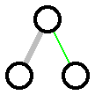
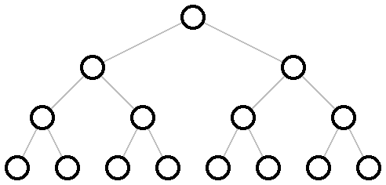
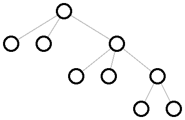
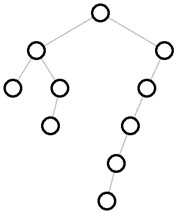
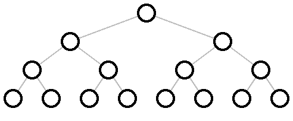
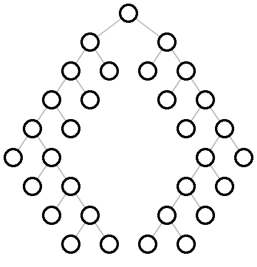
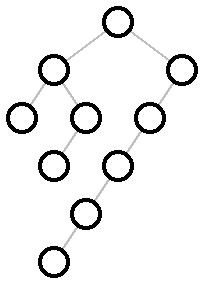

12 Tree Layout
These functions specify tree layouts and functions that render them as picts.
| (require pict/tree-layout) | package： pict-lib |
函数
(tree-layout [#:pict node-pict] child ...) → tree-layout?
node-pict : (or/c #f pict?) = #f child : (or/c tree-layout? tree-edge? #f)
If the children are tree-layout?s, then they have edges created by passing the corresponding tree-layout?s directly to tree-edge. Children that are #f correspond to leaf nodes that are not drawn.
The default node-pict (used when it is #f) is
函数
(tree-edge node [ #:edge-color edge-color #:edge-width edge-width]) → tree-edge? node : tree-layout?
edge-color :
(or/c string? (is-a?/c color%) (list/c byte? byte? byte?)) = "gray" edge-width : (or/c 'unspecified real? #f) = 'unspecified
When edge-width is 'unspecified, the line width will not be set. This is intended to allow the line width to be set for the whole pict via linewidth. Otherwise, edge-width is interpreted the same way as the width argument for the linewidth function.
> (naive-layered (tree-layout (tree-edge #:edge-width 3 (tree-layout)) (tree-edge #:edge-color "green" (tree-layout)))) 
修改于package pict-lib的6.1.0.5版本：Added an #:edge-width option
函数
(tree-layout? v) → boolean?
v : any/c
函数
(binary-tree-layout? v) → boolean?
v : any/c
> (binary-tree-layout? (tree-layout #f #f)) #t
> (binary-tree-layout? #f) #t
> (binary-tree-layout? (tree-layout (tree-layout) (tree-layout))) #f
函数
(tree-edge? v) → boolean?
v : any/c
函数
(naive-layered tree-layout [ #:x-spacing x-spacing #:y-spacing y-spacing]) → pict? tree-layout : tree-layout? x-spacing : (or/c (and/c real? positive?) #f) = #f y-spacing : (or/c (and/c real? positive?) #f) = #f
> (define (complete d) (cond [(zero? d) #f] [else (define s (complete (- d 1))) (tree-layout s s)])) > (naive-layered (complete 4)) 
> (naive-layered (tree-layout (tree-layout) (tree-layout) (tree-layout (tree-layout) (tree-layout) (tree-layout (tree-layout) (tree-layout))))) 
> (define right-subtree-with-left-chain (tree-layout (tree-layout (tree-layout #f #f) (tree-layout (tree-layout #f #f) #f)) (tree-layout (tree-layout (tree-layout (tree-layout (tree-layout #f #f) #f) #f) #f) #f))) > (naive-layered right-subtree-with-left-chain) 
函数
(binary-tidier tree-layout [ #:x-spacing x-spacing #:y-spacing y-spacing]) → pict? tree-layout : binary-tree-layout? x-spacing : (or/c (and/c real? positive?) #f) = #f y-spacing : (or/c (and/c real? positive?) #f) = #f
nodes at the same level of tree appear at the same vertical distance from the top of the pict
parents are centered over their children, which are placed from left to right,
isomorphic subtrees are drawn the same way, no matter where they appear in the complete tree, and
a tree and its mirror image produce picts that are mirror images of each other (which also holds for subtrees of the complete tree).
More precisely, it recursively lays out the two subtree and then, without adjusting the layout of the two subtrees, moves them as close together as it can, putting the root of the new tree centered on top of its children. (It does this in linear time, using clever techniques as discussed in the paper.)
The x-spacing and y-spacing are the amount of space that each row and each column takes up, measured in pixels. If x-spacing is #f, it is the width of the widest node pict? in the tree. If y-spacing is #f, it is 1.5 times the width of the widest node pict? in the tree.
> (binary-tidier (complete 4)) 
> (define (dl t) (tree-layout (tree-layout #f #f) t)) > (define (dr t) (tree-layout t (tree-layout #f #f)))
> (binary-tidier (tree-layout (dr (dr (dr (dl (dl (dl (complete 2))))))) (dl (dl (dl (dr (dr (dr (complete 2))))))))) 
> (binary-tidier right-subtree-with-left-chain) 
函数
(hv-alternating tree-layout [ #:x-spacing x-spacing #:y-spacing y-spacing]) → pict? tree-layout : binary-tree-layout? x-spacing : (or/c (and/c real? positive?) #f) = #f y-spacing : (or/c (and/c real? positive?) #f) = #f
It adds horizontal and vertical space between layers based on x-spacing and y-spacing. If either is #f, 1.5 times the size of the biggest node is used.
> (hv-alternating (complete 8))

添加于package pict-lib的6.0.1.4版本。